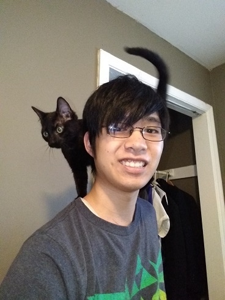
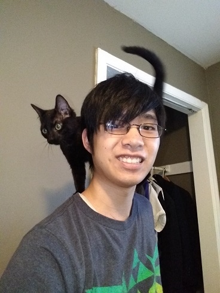

First off, the title of Treasurer is an inside joke my family has. Someone will be mad at me if I tell you any more about it, so I think that's all I will say here.
Now for the real introduction. As proclaimed in nice big letters on top of this page, my name is Matthew da Rosa. I am aiming for an IT career, but I am taking an early semester to find out two important things. One, whether I like this better. Two, to introduce myself to the programmming side of things to better spot problems and understand the process. It may be fine to just tell the devs to fix something, but I want to have some understanding of what would need to be done. At 33 years old, it may be a bit late to be waffling like this, but that's how life goes. I've always had some knowlege of technology, but haven't really delved deeper until recently. Most of the reason for that is money. Computer parts are expensive to play with.
This paragraph has the less relevent stuff about me. I spend too much time playing video games. All the ones I like are single player, to the point that on the rare occasion I pick up an MMO I still play solo. My favorite games are all of the Legend of Zelda series, aside from the ones deemed Forbidden and to Not Exist. My family likes the games enough that the Zelda titles were the entire reason we owned a Gamecube, Wii, and Switch. I am not entirely a couch potato, however. I am a black belt in a form of kenpo karate with Chinese influence. I have never had to punch anyone since learning it, though. It turns out Asians who can so much as take a stance are far more intimidating than they should be. I think people in my area watched too many Kung Fu flicks. I also have a cat, Jiji, who may think she's a dog. She prefers lettuce to chicken, loves tug of war more than any feather toy, and I think I caught her barking once. She's not a kitten anymore, but the picture of us above is from that time because it's much harder to take a picture with her on my shoulder now.